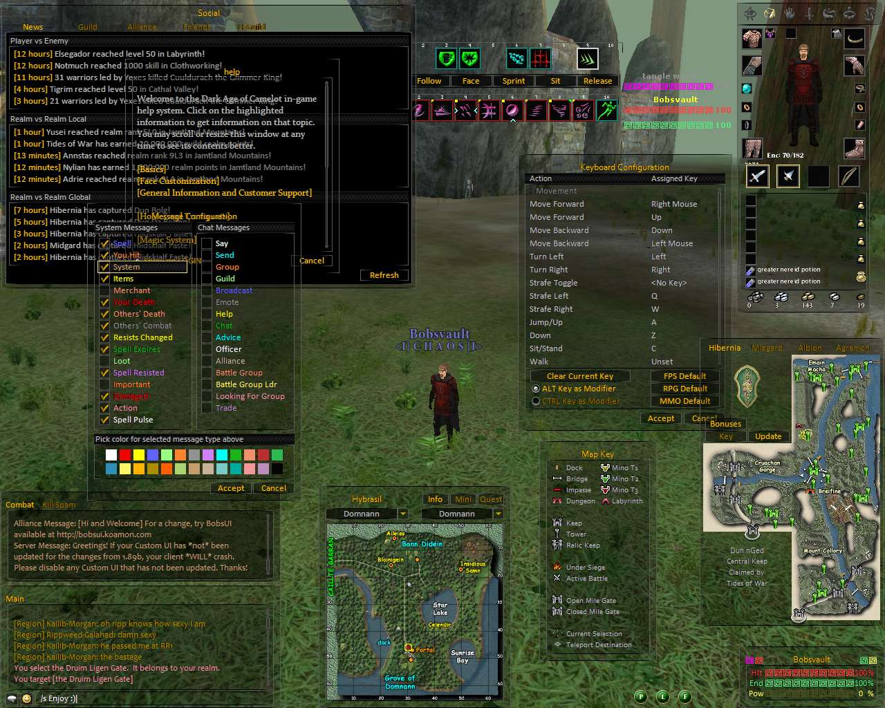

This option allows you to choose this style for the Dialog Skin.
This is the Quillixx Light style Dialog skins. The background of the skin has a 20% transparency level.

Note: Although it is not necessary, you should match the Button and Dialog skin styles for best appearance.